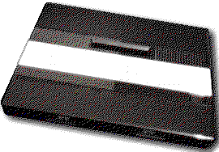

Previous
Next
TOC
Das Atari Video Computer System 5200

Atari 5200 Cartridgesockel
Oberseite
D0
D1
D2
D3
D4
D5
D6
D7
X1
X2
NC
GND
GND
--1- --2- --3- --4- --5- --6- --7- --8- --9- -10- -11- -12- -13-
A0
A1
A3
A4
GND
GND
GND
+5V
A7
NC
A8
Ai
A9
Unterseite
GND
A6
A5
A2
IL
-14- -15- -16- -17- -18-
A13
A10
A12
A12
IL
X1 - Enable $80-8F (Chipselect)
X2 - Enable $40-4F (Chipselect)
Ai - Audio In
Atari 5200 Expansionsockel
Oberseite
+5V
Ao
GND
R/W
X1
D6
D4
D2
D0
IRW
GND
SDI
SIC
--1- --2- --3- --4- --5- --6- --7- --8- --9- -10- -11- -12- -13-
A11
A7
A6
A5
A4
A3
A2
A1
A0
GND
D1
D3
D5
Unterseite
SOC
SDO
Ai
A14
CLK
-14- -15- -16- -17- -18-
D7
NC
GND
NC
+5V
X1 - Enable $E0-EF (Chipselect)
Ao - Audio Out
SDI - Serial Data In
SIC - Serial In Clock
SOC - Serial Out Clock
SDO - Serial Data Out
Ai
- Audio In
NC
- Nicht benutzt
Kapitel Das Atari Video Computer System 5200, Seite 1